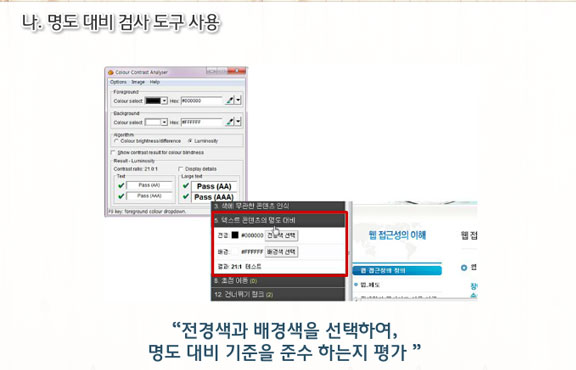

웹 표준
웹 접근성의 이해
웹 접근성이란?
- 웹 접근성의 정의 : 웹 콘텐츠라는 대상에 쉽게 접근할수 있는 능력
- 웹 접근성의 중요성
- 누구나, 어떠한 기술 환경에 구애받지 않음
- 전문적인 능력 없이 웹 사이트에서 제공하는 모든 정보
웹 접근성의 범위
- 웹 접근성의 좁은 의미 : 다양한 사용자 환경에서의 장애인, 보조기기, 보조기술 = 장애인 접근성
웹 접근성 관련 용어
- 웹 접근성의 넓은 의미 : 기본적인 정의나 기대효과
- 웹 접근성의 지침
- "장애인 접근성" 중심으로 현재까지 ActiveX 사용
- 시각장애인등 다양한 장애유형별 사용자가 이를 키보드로 이용 가능함
- 대체수단을 통하여 음성 지원등 다양한 방법으로 설치 및 이용할 수 있다면 웹 접근성을 준수한 것으로 인정
- 웹 표준, 웹 호환성, 오픈 웹
정지 기능 제공
- 웹 표준 : 월드 와이드 웹의 측면을 서술하고 정의하는 공식 표준이나 다른 기술 규격을 가리키는 일반적인 용어
- 웹 호환성
- 행정기관이 국민을 대상으로 함 -> 전자정부 서비스 등의 웹 사이트를 사용자인 국내외에 거주 하고 있는 국민
- 어떤 브라우저를 사용하든지 웹 사이트에 접속하여 정상적인 서비스를 받을 수 있어야 함
- 다.오픈 웹
- 윈도와 인터넷 익스플로러를 통해서만 이용할 수 있는 대한민국의 전자정부와 온라인 뱅킹 서비스를 대상으로 함
장애인의 웹 사용과 장애인 차별금지법
장애인과 인터넷 이용환경
- 인터넷은 이동이 불편하거나 소통이 어려운 장애인 사용자에게는 웹 접근성을 높여 이용 가능하도록 하는 것이 중요한 요소가 됨
- 정보통신 장애 환경의 이해
- 고정키
- 필터키
- 토글키
- 고대비 모드
- 마우스키
장애인차별금지법
- 정의
- 장애인 차별금지 및 권리구제 등에 관한 법률의 줄임 말
- 모든 생활 영역에서 장애를 이유로 차별을 금지하고, 장애를 이유로 차별 받은 사람의 권익을 효과적으로 구제하기 위한 법
- 적용시기
- 2007.04제정 후, 2008.04시행
웹 접근성 의무적용 시기
- 웹 접근성 의무적용 대상
- 현재 시점에서 모든 웹 접근성을 의무적용
- 민간 일반 공연장 및 소공연장과 300석 이상의 영화상영관, 사립박물관과 미술관 제외 →웹 접근성 개선 및 장차법 적용 프로젝트들이 2010년부터 지속적으로 이루어짐
- 장애인차별금지법 미 준수시
- 구제절차 : 국가인권위원회 → 법무부 → 민사상 손해에 대한 손해배상 청구 →형사소송
- 진정 가능한 대상 : 누구나
- 입증책임 : 소명
- 장애인차별금지법 : '악의적'인지 '고의적'인지 판단필요
인식의 용이성(1)
대체 텍스트
가. 대체 텍스트의 이해
- 대체 텍스트의 개념
- 테스트가 아닌 콘텐츠들 즉, 이미지, 이모티콘문자, 영상, 음성 콘텐츠 등에 대하여 이를 텍스트 정보로 대체해 주는 것
- 텍스트가 아닌 콘텐츠를 대체하여 제공하는 텍스트 정보
나. 대체 텍스트의 필요성
- 음성으로 변환이 가능한 텍스트로 제공 - 스크린리더(화면낭독기)
- 이미지가 제공되지 못하는 환경에서 대체 텍스트를 화면에 제시
- 검색엔진에서 이미지를 검색할 때, 대체 텍스트를 검색포털에서 보여질 수 있는 조건으로 제시
다. 대체 텍스트의 검사항목 해설
- 웹 접근성(시각장애인) →대체 텍스트 제공(음성정보)
- 대체 텍스트에서 가장 중요한 것은 시각적으로 전달되는 정보의 핵심을 놓치지 않으면서 최대한 간결하게 제공하는 것입니다.
라. 대체 텍스트의 제공방법
- 제공방법
- (기준) 텍스트가 아닌 콘텐츠를 이용할 경우, 해당 이미지가 제공하는 의미나 용도를 동일하게 인식할 수 있는 적절한 대체텍스트 제공 시 준수한 것으로 인정
- (가) 텍스트 이미지에 대체 텍스트를 미 제공한 경우
- (나) 불충분한 대체 텍스트를 제공한 경우
- 제목과 더불어 제공되는 일시나 장소등 중요정보를 같이 제공합니다.
- (다) 오타로 표기된 경우
- (라) <input type=“image”>에 대체 텍스트를 미 제공한 경우
- (마) 게시판 내용 중 이미지의 대체 텍스트를 미 제공한 경우
- 해당 이미지의 주제, 목적등을 이해할 수 있는 수준에서 제공 하는 것이 바람직합니다.
- (바) 블릿 이미지(의미가 없는 이미지)에 대한 대체 텍스트를 미 제공한 경우
- 빈 값에 대체 텍스트를 제공해 주면 화면 낭독기에서 블릿 이미지에 대한 내용을 낭독하지 않고 넘어가며 alt의 따옴표 사이에 빈칸이 있어서도 안됩니다.
- (사) 의미없는 이미지에 대한 대체 텍스트를 제공한 경우
- 명백하게 정보를 제공하는 경우가 아니라면, 빈값에 대체 텍스트를 제공하므로 화면 낭독기 사용자들의 불필요한 시간을 절약해 주어야 합니다.
- (아) 여러 개로 분리한 이미지 조각의 대체 텍스트 제공
- 의미적으로 하나의 이미지인데 여러개의 조각으로 이미지를 제공하여 금융의 이미지, 새로운 미래 IBK 이미지가 별도의 의미와 이미지로 분리되어 있는것으로 오해 할 수 있는 문제가 있습니다. 따라서 가장 중요한 이미지 또는 크기가 가장 큰이미지에 대체 텍스트를 넣어주고 나머지는 그냥 공백으로 대체 텍스트를 제공하면 됩니다.
멀티미디어 대체수단
멀티미디어 대체수단의 이해
- 멀티미디어 콘텐츠의 개념
- 주로 음성을 포함하는 영상 또는 음성으로만 제공되는 콘텐츠 등
- 멀티미디어 콘텐츠의 대체수단은 음성정보를 대신하여 시각적인 정보인 자막이나 대본 또는 수화 등의 대체해주는 것
멀티미디어 대체수단의 필요성
- 자막제공 - 청각장애인에게 중요한 지표 : 영상 또는 음성 컨텐츠에서 제공되는 소리를 시각적 정보인 자막, 대본, 수화를 통해 인식 (비장애인도 명확한 이해 가능)
멀티미디어 대체수단의 검사항목 해설
- 동기화된 자막
- 정보의 정확성과 한 화면에서 볼 수 있도록 제공
- 정보의 차별이 생기지 않도록 주의 : 청각장애인
- 파일로 제공되는 동영상과 음성 및 자막도 평가대상에 포함
- 닫힌자막(Closed Caption)을 오디오와 동기화시켜 제공
- 즉시성이 필요한 경우, 실시간 수화를 제공하거나 자막을 제공
- 닫힌 자막 : 영상 화면에서 자막 기능을 닫을 수 있는 자막
- 열린 자막 : 영상 화면에 완전히 박혀버려 자막 만을 수정하거나 지울 수 없는 상태
멀티미디어 대체수단의 제공방법
- 제공방법
- 멀티미디어 콘텐츠를 동등하게 인식할 수 있도록 제작하기 위해서 자막, 대본 또는 수화를 제공한 경우 준수한 것으로 인정
- 오류 유형
- 영상,음성 콘텐츠에 자막,대본,수화 중 하나 이상의 대체 수단을 제공하지 않은 경우
- 내용 전체를 충분히 설명하지 않고, 요약 정보나 제목만 제공하는 경우
- 텍스트만 제공하는 영상 콘텐츠에서 동등한 음성을 미 제공 시
인식의 용이성(2)
색에 무관한 콘텐츠 인식
- 콘텐츠는 색에 관계없이 인식될 수 있다.
- 개념 : 정보를 구분하는 구별점을 색상으로만 하지 않고, 색을 배제하더라도 인식할 수 있도록 제공하는 것
(목적 : 시력이 약한 사용자에게 색상이 아닌 다른 방식으로 구분할 수 있는 정보 제공) - 명도 차에 대란 색상 구분은 따로 두지않습니다.
- 제공방법 기준: 색을 배제하여도 해당 콘텐츠를 인식할 수 있는 정보를 제공한 경우 준수한 것으로 인정합니다.
- 오류 유형
- 가. 색상만으로 내용을 분별하도록 제공된 콘텐츠(그래프,차트,지도 등)
- 색의 구분은 보조적으로 제공하고, 명확한 수치 파악을 위해 보조선 및 범례를 두어 구분할수 있도록 합니다.
- 나. 페이지 네비게이션, 메뉴, 현재 위치 등에 대해 명암, 패턴 등의 변화 없이 색상의 변환만으로 현재의 위치를 표시한 경우
- 색상 뿐만 아니라 체크표시를 해주도록 합니다.
- 다. 필수 입력 항목을 색으로만 표시한 경우
- 색상으로 구별한 정보에 체크표시를 합니다.
명확한 지시사항 제공
- 지시사항은 모양, 크기, 위치, 방향, 색,소리 등에 관계없이 인식될 수 있어야 한다.
- 개념 : 지시사항을 전달하는 콘텐츠에 한정해 적용하는 것
무엇을 지시하는지 명확하게 하기 위해 목적이 분명한 지시가 되어야 하는 것
특정 감각에만 의존하지 않고 다른 감각을 통해서도 지시사항을 인식할 수 있도록 정보를 제공하는 것
(목적 : 특정한 감각에 장애가 있는 사용자가 웹 사이트에서 지시된 내용을 제대로 실행할 수 있도록 함) - 링크 텍스트가 아닌 이미지 텍스트로 만든 링크로 링크 텍스트의 내용과 똑같이 대체 텍스트로 제공하여 시각장애인들도 이해 가능
- 제공방법 기준: 지시사항 정보를 특정 감각에 의존하지 않고 다양한 감각을 통해 용도나 목적을 이해할 수 있도록 제공한 경우 준수한 것으로 인정합니다.
- 오류 유형
- 가. 색, 크기, 모양, 방향 등으로만 정보를 제공한 경우
- 고유 명사로 정보를 제공한 경우는 명확한 목적과 용도를 이해할수있음
- 나. 전달하고자 하는 지시사항을 소리로만 정보를 제공한 경우
- 소리로 알리는 것과 동시에 시각적으로도 표시한다.
텍스트 콘텐츠의 명도 대비
- 개념:텍스트 콘텐츠와 배경 간의 명도 대비는 4.5대 1이상 이어야 한다.
명도란 물체의 색이나 빛의 색이 지니는 밝기의 정도를 말한다.
(목적:시력이 약한 사용자를 위한 지침으로 최소한의 명도 차이를 둠으로써 정보를 인식할 수 있도록 함) - 본문 콘텐츠에 대해서만 적용(검사 적용 예외는 아래와 같습니다.)
- 단순히 장식 목적으로만 사용한 텍스트
- 로고 또는 상호와 같은 텍스트 이미지
- 마우스나 키보들들 활용하여 초점을 받았을 때 색이나 명도 대비가 변화하는 콘텐츠
- 사용할 수 없음을 표시하기 위하여 명도 대비를 낮춘 회색의 컨트롤이나 입력 서식 등
- 제공방법 기준은 웹페이지 콘텐츠에 텍스트, 이미지 텍스트 정보에 대해 폰트의 크기가 4.5:1이상(18pt이상), 굵은 14pt 이상은 3:1이상의 명도 대비를 제공하는 경우
단, 화면 확대가 가능하도록 구현한 텍스트 콘텐츠(텍스트 및 텍스트 이미지)의 명도 대비는 3:1까지 준수로 인정 - 오류 유형
- 가. 텍스트의 규격 정보가 있으며, 보통 크기(18pt 미만, 또는 굵은 14pt 미만)의 텍스트가 4.5:1을 만족하지 않은 경우
- 나. 텍스트의 규격 정보가 있으며, 텍스트의 크기가 18pt 이상, 또는 굵은 14pt 이상의 텍스트가 3:1을 만족하지 않은 경우
- 다. 이미지 텍스트의 경우 폰트 종류와 상관없이 14pt 크기에 해당하는 18.66px 미만의 경우 4.5:1 이상이거나, 18.66px 이상인 경우 3:1 이상을 만족하지 않은 경우(굵은 14pt 기준은 적용하지 않음)
- 주의사항
- 본문은 콘텐츠 영역으로 제공된 텍스트 또는 정보를 제공하는 표, 그래프 및 텍스트 이미지의 텍스트 내용을 의미
명도의 차이를 두어야하는 대상: 웹페이지 콘텐츠(전체)-웹페이지 콘텐츠(전체)를 심사의 대상으로 정함
장식적인 문구를 제외한 모든 텍스트에 대해서 명도 대비 줌
- 텍스트 크기가 구분이 되지 않는 경우나 이미지 텍스트의 경우는 글 모양과 상관없이 Windows에서 14pt는 18.66px이고 18pt는 24px로 적용하며, 굵음의 여부와 상관 없이 14pt 이상은 3:1이상, 미만은 4.5:1이상의 명도대비를 제공하는 경우 준수하는 것으로 인정
- 웹페이지 콘텐츠에 장식 목적으로만 사용한 텍스트, 로고 또는 상호와 같은 텍스트 이미지, 마우스나 키보드를 활용하여 초점을 받았을 때 색이나 명도 대비가 변환하는 콘텐츠, 사용할 수 없음을 표시하기 위하여 명도 대비를 낮춘 회색의 컨트롤이나 입력 서식등은 이 검사 항목의 적용을 받지 않음(장식목적으로 사용한 텍스트나 로고 등에 대한 이미지 텍스트와 비활성화를 나타내기 위해 명도를 낮추어 회색으로 적용하는 컨트롤이나 입력 서식은 명도 대비 검사 대상에서 제외)
- 색상테마 등을 이용하여 전체 웹 사이트의 색상정보를 변경하여 준수한 경우 인정
- 자동으로 재생되는 배경음을 사용하지 않아야 한다.
- 배경음의 개념 : 페이지에서 배경으로 제공되는 음성 정보
배경음의 목적 : 배경음으로 인해 화면 낭독기의 음성이 방해받지 않게 하여 웹 콘텐츠를 인식 가능하도록 함
제공 방법 기준: 배경음 사용하지 않았거나 3초 이내 또는 바로 정지 할수 있는 배경음 콘텐츠를 사용한 경우 - 오류 유형
- 가. 웹 페이지에서 자동적으로 재생되는 3초 이상의 배경음(동영상,음성, 음악 등) 콘텐츠를 제공하는 경우
- 마우스 오버 또는 키보드 초점을 받아 자동적으로 배경음이 3초 이상 실행되는 경우
- 주의 사항
- 3초 미만의 배경음은 예외
- 자동적으로 재생되는 배경음의 지속시간이 3초이상, 제어수단이 페이지의 가장 첫부분에 제공되는 경우 준수 한 것으로 인정
- 이웃한 콘텐츠는 구별될 수 있어야 한다.
- 개념: 모든 기능은 키보드만으로도 사용 할 수 있어야 함
- 필요성- 마우스를 이용하기 어려운 사용자의 어려움 해소
- 검사항목 해설- 마우스로 이용 가능한 기능 키보드로도 이용할 수 있도록 구현
- 제공 방법- 모든 기능을 키보드로 접근, 사용 가능하도록 제공
- 개념: 키보드에 의한 초점이 논리적으로 이동해야 하며 시각적으로 구별할 수 있어야 함
- 필요성- 키보드로만 웹 사이트를 이용하는 사용자 어려움 해소
- 검사항목 해설- 초점을 받았을 때 시각적으로 구분, 사용자가 현재 키보드 위치를 이해할 수 있도록 함
- 제공 방법- 키보드 초점을 받은 링크, 컨트롤 및 입력 서식 초점을 받지 않은 객체들로부터 구분될 수 있게 제공
- 개념: 사용자의 입력 및 컨트롤을 조작할 수 있도록 하는 것
- 필요성- 손 떨림이 있는 사용자와 시각 장애인의 용이한 조작
- 검사항목 해설- 링크, 사용자 입력, 기타 컨트롤 등의 안쪽 여백을 두고 이곳에서는 위치 지정 도구가 조작에 미반응
- 제공 방법
- 모든 컨트롤들은 대각선 길이가 6.0mm 이상
- 컨트롤의 안쪽 여백: 1px 이상
- 개념: 시간제한이 있는 콘텐츠는 응답시간을 조절할 수 있어야 함
- 필요성- 감각 장애가 있는 사용자의 어려움 해소
- 검사항목 해설- 시간제한이 있는 콘텐츠는 정지, 시간 연장할 수 있는 기능 제공
- 제공 방법- 시간제한이 있는 콘텐츠의 응답시간을 조절 가능하게 제공
- 개념: 자동 변경되는 콘텐츠 움직임을 제어할 수 있어야 함
- 필요성- 콘텐츠에 대한 인식이 느린 사용자 어려움 해소
- 검사항목 해설- 정보를 제공하는 콘텐츠가 자동 변경되는 경우 반드시 이전, 다음, 정지 기능을 제공
- 제공 방법- 자동 변경되는 콘텐츠의 움직임을 제어할 수 있도록 제공
- 초당 3~50회 깜빡임이 반복회는 콘텐츠를 제공하면 안됨
- 깜빡임이 3초 이하인 경우 문제가 되지 않음
- 깜빡임과 번쩍임 제한의 필요성
- 목적: 어린이 또는 광과민성 발작 증세가 있는 사용자를 위함
- 검사항목 13. (깜빡임과 번쩍임 사용 제한)
초당 3~50회 주기로 깜빡이거나 번쩍이는 영상 콘텐츠는 제공하지 않거나 사전에 경고해야한다는 이 항목은 이 항목을 오류 없이 제공한 경우 준수한 것으로 인정
- 오류 유형 분석
- 사전 경고 없이 초당 3~50회 깜빡이는 콘텐츠가 존재할 경우
- 각기 다른 단색이 교대로 빠르게 깜빡거림으로 인해 광과민성 발작을 일으킬 수 있음
- 주의 사항 분석
- 가. 깜빡임을 중단할 수 있는 수단을 제공했어도깜빡임을 미리 경고하지 않은 경우 감점
- 나. 깜빡임이 3초 미만인 경우 인정
- 다. 동영상 콘텐츠도 검사 대상
- 사전 경고 없이 초당 3~50회 깜빡이는 콘텐츠가 존재할 경우
- 콘텐츠의 반복되는 영역은 건너뛸 수 있어야 한다는 의미
- 반복 영역 건너뛰기의 필요성
시각 및 상지 장애인들이 마우스 사용자와 같이 원하는 콘텐츠로 쉽게 접근할 수 있게 하기 위함 - 검사항목 해설:
검사항목 14. (반복 영역 건너뛰기) 대메뉴와 같이 반복되는 영역이 있는 경우 바로 건너 뛸 수 있도록 건너뛰기 링크를 제공해야 하며, 반복되는 영역이 아닌 경우에는 없어도 됨 - 오류 유형 분석
- 가. 건너뛰기 링크를 제공하지 않은 경우
- 나. 건너뛰기 링크는 제공하고 있으나 동작이 안 되는 경우
- 주의 사항 분석
- 지나치게 많은 건너뛰기 링크를 제공하지 말 것(3개 이내 권장)
- 건너뛰기 링크에 키보드 접근이 불가한 경우 검사항목 8,14에서 동시 감점 (시각적으로 보이지 않음/ 키보드 접근 불가)
- 건너뛰기 링크는 display:none 등으로 감추지 않고, 화면에서 볼 수 있도록 제공하는 것을 권장
- 부가적인 건너뛰기 링크가 동작이 안 되는 경우 또는 건너뛰기 링크가 필요 없음에도 제공하여 동작되지 않는 경우도 감점
- 링크의 수가 많거나 메뉴나 링크 등의 반복되는 콘텐츠가 많은 복잡한 페이지일 경우에만 반복 영역 건너뛰기가 필요
- 페이지 제목이 콘텐츠 블록에는 적절한 제목을 제공해야 함
- 제목 제공의 필요성
- 웹 페이지의 제목과 각 프레임 및 콘텐츠 블록의 제목은 각각 해당 콘텐츠가 어떤 내용을 담고 있는지 미리 짐작할 수 있게 해줌
- 검사항목 15.(제목제공) 든 페이지와 프레임에는 해당 페이지와 프레임의 적절한 제목을 제공해야 함
- 오류 유형 분석
- 가. 제목을 제공하지 않아 웹 브라우저 상단의 탭에 URL이 그대로 노출되는 경우
(페이지 제목의 title 속성을 제공하지 않았거나 내용과 다른 의미의 제목을 사용한 경우) - 나. 페이지 제목에 반복되는 특수문자를 제공한 경우
- 화면 낭독기에서 불필요한 음성을 출력함으로 혼란을 줄 수 있음 - 다. 페이지 제목의 분류가 더 가능함에도 불구하고, 상위 범주로 제목을 제공한 경우
- 하위 페이지 간에 제목이 중복될 수 있음 - 라. <frame>, <frameset>, <iframe> 요소에 타이틀 속성이 없거나, 속성 값을 비워둔 경우 또는 내용이 부적절한 경우
- 마. 내용 또는 기능이 없는 프레임에 <title>을 비워두거나 제공하지 않은 경우
- 바. 콘텐츠 블록(본문영역에 포함된 콘텐츠들의 제목)에 <h1~6> 요소를 활용하여 제공하지 않은 경우
- 가. 제목을 제공하지 않아 웹 브라우저 상단의 탭에 URL이 그대로 노출되는 경우
- 주의 사항 분석
- 프레임 제목은 프레임 내에 포함된 콘텐츠를 유추할 수 있는 간결한 제목을 제공
- 간결하게 목적, 용도 알수 있게 제공 - 적절
- 위치나 상대적인 개념 제공 - 부적절
- 내용 또는 기능이 없는 프레임에도 "빈 프레임", "내용없음"과 같이 title을 제공해야 함
- 게시판의 '목록, 읽기, 쓰기' 페이지의 제목을 읽기(해당 글의 제목), 쓰기 등으로 구분하여 제공하는것 권장
- 프레임 제목은 프레임 내에 포함된 콘텐츠를 유추할 수 있는 간결한 제목을 제공
- 링크의 목적을 알 수 있도록 적절한 링크 텍스트를 제공해야 하며, 링크 텍스트를 URL로만 제공하지 않음
- 목적: 링크 텍스트(텍스트 정보 통해 목적이나 용도 잘 제공) → 해당 내용 잘못 이해해 생긴 사용자 실수, 번거로움 줄여줄 수 있음
- 검사항목 16. 링크 텍스트는 고유명사나 대명사를 이용하여 명확한 목적과 용도를 나타내 주어야 함
- 오류 유형 분석
- 목적이나 용도를 알기 어려운 링크 텍스트를 제공한 경우
- 주의 사항 분석
- 링크의 목적을 키보드의 순서나 문맥 통해 이해할 수 있으면 인정
- 링크 텍스트를 단순히 URL 경로로만 제공하지 않는 것을 권장
- 적절한 링크텍스트는 목적과 용도를 설명하는 내용을 링크로 연결하는 것이 좋음
- 가. 기본언어표시의 이해
- 주로 사용하는 언어를 명시해야함
- 나. 기본언어표시의 필요성
- 목적:다양한 언어공부하거나 이용하는 사용자에게 중요한 지표
- 다. 기본 언어 표시의 검사항목 해설
- 주로 사용하는 언어를 명시해야합니다.
중간에 언어가 바뀌는 경우 lang속성통해 언어를 바꿔주면 더 이해하기 좋은 사이트가 되며
기본 언어표시는 화면 낭독 프로그램과 같은 보조기기에서 기본언어에 맞는 TTS(Text To Speech)엔진가동시키는 역할을 합니다. - 라. 기본언어표시제공방법
- 웹페이지에서 주로 사용하는 언어를 html에 lang속성을 사용하여 제공한 경우 준수한 것으로 인정
- 오류유형분석
- 가) html에 lang 속성을 명시하지 않거나 잘못 명시한 경우
- 주의 사항 분석-1
- 기본 언어는 페이지의 상단에 html태그에 lang속성을 이용하여 지정하고,
lang의 속성 값에는 ISO 639-1에서 지정한 두 글자로 된 언어 코드를 사용해야 함 - 주의 사항 분석-2
- 페이지 중간에 언어가 바뀔 때 변경된 언어를 lang 속성을 명시해주는 것을 권장
- 가. 사용자 요구에 따른 실행의 이해
- 1.사용자 요구에 따른 실행
- 사용자가 의도하지 않은 기능은 실행되지 않아야 함
- 나. 사용자 요구에 따른 실행의 필요성
- 사용자가 의도하지 않은 새창이나 초점 변화를 일으키지 않도록 함
- 해당 사항 발생할 경우 사전에 내용을 알려주어 콘텐츠 움직임에 문제 없게 하고, 콘텐츠 이용에 이해를 높임
- 다. 사용자 요구에 따른 실행의 검사 항목 해설
- 상기 항목을 오류 없이 제공한 경우 준수한 것으로 인정
- 라. 사용자 요구에 따른 실행 제공 방법
- 오류 유형 분석
- 가. 사용자가 실행하지 않은 상황에서 예측하지 않은 새 창이 열리는 경우
- 나. 버튼 또는 링크 등을 실행할 때 사전에 알리지 않고 새 창이 발생되는 경우
- 다. 웹 사이트 초기화면에 팝업 창(레이어 팝업)을 제공하는 경우
- 라. 사용자가 의도하지 않은 초점 변화가 발생하는 경우
- 마. 체크상자의 선택, 텍스트 입력 서식의 값 변경만으로 값이 제출되어 문맥이 바뀌는 경우
- 주의 사항 분석
- 가. onkeypress에 의해 포커스를 옮기는 동작만으로 새 창이 발생하면 감점
- onclick 이벤트 핸들러에서 키보드 눌리는 경우도 click으로 간주
Tab키에 의해서 새 창이 뜨는 등 의도하지 않은 실행 주의 - 나.<a target="_blank">로만 새창을 알린 경우 감점하지 않음
- HTML에서 새 창을 열어주는 용도로써 사용되는 속성이 target="_blank"이기 때문에 화면 낭독기가 그 용도로 활용하는 것이 바람직하다는 측면에서 인정
- 다.onfocus="this.blur()"를 사용하는 경우 검사항목 7, 8, 16에서 동시 감점
- 키보드 접근 불가, 초점의 시각적 구분 불가, 의도치 않은 초점변화
- 라.플래시 등에서 제공하는 새 창에서도 Name, Description 값에서 새 창 안내에 대한 내용을 포함하지 않으면 감점
- 마. 오류 정정을 위한 자동 초점 변경은 예외(의도치 않은 실행 아님)
- 가&나 : 콘텐츠 선형구조의 이해,필요성
- 1.콘텐츠 선형구조의 개념
- 웹 문서를 제작할 때 뼈대가 되는 HTML 마크업 언어
- 논리적인 순서로 CSS 제거
- CSS를 제거하기 전의 초점 이동과 논리적 순서의 일치
- 다. 콘텐츠 선형구조의 검사항목 해설
- 검사항목9(초점이동)논리적인 순서로 초점이동과 검사항목19(콘텐츠 선형구조)문서의 구조와 표현을 분리
일반 윈도우 커서와 가상 커서의 순서를 맞춰주는 것과 같음 - 라. 콘텐츠 선형구조 제공방법
- 기준 : 콘텐츠 순서가 논리적으로 선형화되어 제공 시 인정
- 오류 유형
- 가. 계층 구조가 명백하게 필요한 콘텐츠를 중첩 마크업을 이용하여 표현하지 않은 경우
(ul과 li를 활용하여 콘텐츠를 마크업후 제공하는 것이 바람직) - 나. '제목-내용'으로 구성된 콘텐츠 목록의 배치가 분리되어 내용을 직관적 이해할 수 없는 경우
(소스코드의 순서를 제목-내용 순으로 하는것이 바람직) - 주의사항
- 1. 탭 메뉴에서 탭1-탭2-탭3으로 이동하여 모든 탭 내용을 확인할 수 있는 경우에도 보다 논리적으로 구성
- 2. 2단계의 깊이를 가진 메뉴에서 1차 메뉴와 2차메뉴, 탭 메뉴와 탭 콘텐츠는 서로 다른 계층으로 표현되어야 함
- 3. 탭 메뉴와 탭 콘텐츠의 계층 구조는 경우에 따라 마크업 중첩이 아닌 '제목-내용'으로 표현이 가능함
- hx-ul, hx-div, hx-p, dt-dd 형식으로 마크업 했다면 계층구조로 인정함
- 제목 영역 : <h1~6>(콘텐츠 구분을 위한 제목으로 활용),
정의형 목록의 <dt>(정의형 목록에서의 제목으로 활용) - 내용 영역
- <ul><div><p>
- 정의형 목록에서의 <dd>로 구성한 경우
- 따라서 h1~6 요소를 이용하여 제목을 제공하는 것이 제목과 내용을 구분에 명확함
- 4. 로그인, 회원가입 등의 방법 안내는 로그인, 회원가입 이전에 정보를 제공할 것
- 5. 선형화 된 페이지에서 서브메뉴가 우측에 위치하는 경우 등 혼란이 없는 경우는 인정
- 가&나 : 표의 구성의 이해,필요성
- 1.개념 : 데이터 간의 상관관계를 요약하여 제공하는 정보
(제목셀과 내용셀을 짝지어 읽게 하거나 표에 대한 설명 정보를 미리 확인할 수 있도록 함) - 다. 표의 구성의 검사항목 해설
- 데이터 테이블은 제목셀과 내용셀로구분하며, 표의 제목과 요약을 제공 합니다.
레이아웃용 테이블은 제목셀과 제목 요약 등을 제공하지 않습니다. - 라. 표의 구성 제공방법
- 기준 : 표를 이해할 수 있도록 정보를 제공한 경우
- 오류유형
- 가. caption 요소, summary 속성을 제공하지 않거나 용도 또는 설명이 부적절한 경우
- 나. 데이터 테이블에 제목 셀과 내용 셀을 th,td요소로 구분하지 않은 경우
- 다. 복잡한 표 제공시 id, headers (제목셀과 내용셀 연결)또는 scope(제목셀의 범위 지정)로 제공하지 않은 경우
- 주의사항
- 원칙적으로 caption 요소와 summary 속성을 모두 사용해야 하며, 이 중 하나이상 적절히 제공한 경우 준수한 것으로 인정
- caption 요소는 표의 제목을, summary 속성에는 표의 요약, 구조나 탐색 방법을 기술해 주어야 함
- 데이터 테이블은 자료들 간의 논리적인 관계를 나타내기 위한 경우로, 표의 형식을 제거하고 선형화 했을 때 이해할 수 없음
- 레이아웃용 테이블은 화면 배치를 위해 작성된 경우로, 표의 형식을 제거하고 선형화했을 때 이해 가능한 경우
- 레이아웃용 테이블에는 th와 caption 요소, summary 속성을 사용하지 않아야 함
- 가&나 : 레이블 제공의 이해,필요성
- 개념 : 입력서식이나 편집창과 같은 폼의 요소에 대한 목적이나 용도(=꼬리표, 라벨)
- 목적 : 운동장애가 있는 분들은 입력 폼으로 진입 할 수 있도록 하며, 화면낭독기 사용자들에게는 입력서식의 이해를 용이하도록 함
- 다. 레이블 제공의 검사항목 해설
- 가장 좋은 레이블이란 <label>의 for와 폼 요소의 id를 연결하는 것이지만
모든 콘텐츠가 id와 for만으로 연결 할 수 없는 경우도 있습니다. ex)전화번호 입력서식
따라서 이때에는 요소의 설명을 의미하는 title속성을 활용하여 사용해야 합니다. - 라. 레이블 제공의 제공방법
- 기준: 입력 서식에 대응하는 레이블을 제공한 경우
- 오류유형
- 가. input, textarea, select 요소에 1:1 대응하는 label 요소 또는 title 속성을 제공하지 않은 경우
- 나. input의 id와 label의 for가 다르거나, 페이지 안에 같은 id가 있는 경우
- 다. select 요소의 첫번째 option이 레이블 역할을 대신하는 경우
(select요소에 타이틀을 제공하여 목적을 파악할수 있도록 함) - 주의사항
- 레이블로 연결할 텍스트가 있는 경우 title 속성보다 label 요소를 제공하는 것을 권장함
- id, for 속성을 사용하지 않고, label 요소로 레이블 텍스트와 서식 컨트롤을 한번에 묶는 암묵적인 방법을 사용한 경우도 인정하지만 권장하지 않음
- 가&나 : 오류정정의 이해, 필요성
- 개념 : 오류들에 대하여 정정할 수 있도록 오류의 내용을 알려주고, 오류의 위치에서 수정할 수 있도록 하는 것
- 목적 : 문제 원인을 파악하기 위함
- 다. 레이블 제공의 검사항목 해설
- 오류입력 항목에 정정 방법 제공, 오류 항목 초점이 자동으로 이동
- 라. 오류 정정의 제공방법
- 기준: 입력 오류를 정정할 수 잇는 방법을 제공한 경우
- 오류 유형
- 가. 입력 서식을 잘못 작성한 경우 해당 서식 필드로 초점을 이동할 수 있는 수단을 제공하지 않거나
해당 서식의 전송버튼을 눌렀을 때, 입력 내용이 모두 사라지는 경우 - 나. 오류 발생 시, 정정할 수 있는 수단을 제공하지 않은 경우
- 다. 입력 정정방식 또는 내용을 잘못 제공한 경우
- 주의사항
- 오류가 있는 곳에만 오류 표시를 하지 않고, 오류의 내용을 먼저 텍스트로 설명해주거나,
프로그램을 통해 오류가 난 위치에 도달하도록 하여 오류의 내용을 설명해 주어야 함(경고창으로 동일하게 알려 사용자에게 인식시켜줌) - 가&나 : 마크업 오류 방지의 이해,필요성
- 개념 : 웹 페이지의 기본이 되는 HTML이나 XHTML과 같은 마크업 언어에서 정한 문법에 맞지 않게 구현한 경우 발생되는 것
- 목적 : 마크업 언어의 문법 오류 방지함으로서 다양한 보조기기에서 콘텐츠를 문제없이 해석할수 있도록 제공할수 있게되며 견고성을 목적으로 함
- 다. 마크업 오류 방지의 검사항목 해설
- 마크업 언어의 요소는 열고 닫음, 중첩 관계 및 속성 선언에 오류가 없어야 한다.
(상기 항목을 오류없이 제공한 경우 준수한 것으로 인정) - 라. 마크업 오류 방지 제공 방법
- 1. 오류 유형 분석
- 가. 태그의 열고 닫음 오류
- 나. 태그의 중첩 오류
- 다. 중복 선언된 속성 오류
- 2. 주의 사항 분석
- 가. ID값 중복 선언은 오류 유형 23-3에서 심사
- ID 값 뿐만 아니라 속성을 중복시키는 경우에도 23번 검사항목에서 지적할 수 있지만 특히 ID 중복이 많음
- 나. 위에 언급된 항목 이외의 표준문법 오류는 포함하지 않음
- 현재 웹 접근성 품질 인증 심사에서 표준 문법에서 태그의 열고 닫음, 중첩 오류, 중복 선언된 속성의 3가지에 대해서만 오류로 보겠다는 내용임
- 가&나 : 웹 애플리케이션 접근성 준수의 이해,필요성
- 개념 : 웹 애플리케이션은 웹 콘텐츠에 포함되어 특정한 기능을 수행하도록 구성된 애플리케이션을 말함
- 목적 : 모든 형태의 콘텐츠에서 차별없이 이용할 수 있도록 함
- 다. 웹 애플리케이션 접근성 준수의 검사항목 해설
- 콘텐츠에 포함된 웹 애플리케이션은 접근성이 있어야 한다.
- 웹 애플리케이션의 자체 접근성을 준수하여 제공한 경우 준수한 것으로 인정
- 라. 웹 애플리케이션 접근성 준수 제공 방법
- 1.오류 유형 분석
- 가. 24-1 웹 애플리케이션이 자체적인 접근성이 없으며 대체 콘텐츠가 존재하지 않는 경우
- 나. 24-1 대체 콘텐츠를 제공했지만 핵심기능을 동등하게 제공하지 못한 경우
- 2. 주의 사항 분석
- 가. 자바스크립트 미지원 환경에서는 평가하지 않음
- 18번 항목. 마크업으로 구현 가능한 기능을 자바스크립트로만 구현하지 말아야 한다.
->자바스크립트가 미작동 될 경우, 기능적 문제 유발(웹 접근성 저해요소)
->자바스크립트의 지원환경을 고의로 미지원시켜 평가하는 형태로 잘못 이해
자체적인 접근성 중심으로 검사, 지원환경을 제거하여 평가하지 않음 - 나. 웹 애플리케이션에 대한 자체 접근성은 각 검사항목에서 평가
- 웹 애플리케이션에 대한 자체 접근성은 웹 애플리케이션 영역에 대해 1~21번 검사항목을 준수하는지를 판단
->22번 검사항목에서는 자동적으로 해당사항이 없음 - 문제점의 해결(웹 접근성의 문제점 ->마크업 기술 중심->HTML과 CSS 중심의 굴레를 벗어나지 못함)
- WCAG1.0->WCAG2.0->KWCAG2.1(동적인 문서나 애플리케이션 영역에 대한 접근성 영역까지 확장)
- 웹 접근성은 잠시의 유행으로 끝나는 것이 아니라 전 세계적인 흐름이자 반드시 필요한 영역
- 웹 접근성이 마크업 영역에 머무르지 않고, 신기술과 새로운 영역까지 발전
- 웹 접근성이 신기술을 규제하는 것이 아니라 연구르 통한 접근성 적용이 가능
- HTML5와 ARIA 등 새로운 기술은 웹 접근성을 향상하는 방향을 발전
- 화면 낭독기 중심으로 적용하는 접근성 구현 방식이 프로그래밍을 통해 해결
- 접근성은 UX와 함께 연계하여 발전할 때 공감할 수 있는 방향으로 전환
- 소프트웨어 한국형 웹 콘텐츠 접근성 지침 2.1이 국가 표준으로 개정
- 장애인스마트워크접근성가이드북 -> 이동이 불편한 장애인들을 위한 업무시설
- 모바일 서비스-> 실제 장애인들을 위한 접근성은 실생활에서 필요한 정보 표현
- 국내의 모바일 애플리케이션 접근성 지침은 7개의 준수항목과 8개의 권고항목으로 구성
- 모바일 애플리케이션 접근성 지침의 업데이트가 필요하며, 한국형 웹 콘텐츠 접근성 지침 2.0과 비교했을 떄 콘텐츠의 이해를 높일 수 있는 항목은 포함하여 적용
- 모바일 웹 역시 한국형 웹 콘텐츠 접근성 지침 2.0에서 인지되지 못한 접근성 문제가 있으므로 새로운 지침을 제정하거나 타 지침에 추가하여 보완
- 개념: 다양한 유형의 사용자가 컴퓨터에서 동작하는 운영체제 및 응용소프트웨어를 사용하는데 불편함이 없도록 보장
- 1998년도 미국 재활법 제508조에서 적용
- 국내에서는 2013년 소프트웨어 접근성 지침 2.0을 국가표준으로 개정중
- 소프트웨어 접근성 지침1.0의 기준으로 총 12개의 검사항목으로 구성
- 21세기 통신 및 비디오법에 의거하여 2013년 10월 9일 이후로 미국에 수출하는 국내의 모든 스마트폰은 접근성을 준수
- 소프트웨어 접근성 검사 항목
- 키보드 기능, 응용프로그래밍인터페이스, 포커스변화, 사용자인터페이스요소, 비트맵이미지응용, 스크린텍스트출력,
시스템설정변경, 동영상표시, 색깔정보, 화면색과대비, 깜박거림, 전자서식 - 새로운 시장 창출, 국제 경쟁력 강화 -> 제품 접근성-> 정부지원 가접근성포럼 창립(2012.12.12)(국내 접근성 법제화 방안)
- 제품 접근성> 2012년 12월 12일에 가전 접근성 포럼이 발족하여 제품 접근성에 대한 법제화 및 가이드라인을 준비중에 있으며,
가전제품을 중심으로 실생활에서 접근성을 높여주기 위해 추진 노력중임(휴대폰,TV,냉장고, 세탁기, 밥솥, 정수등 6종) - 서비스 접근성>건물,공간,웹,모바일,소프트웨어,제품,서비스까지 하나의 서비스 단위에 접근성을 준수할 수 있도록 하는 것으로 매우 큰 의미가 있으며, 종합적인 접근성을 적용
- 접근성 책임자>웹,소프트웨어,문서,제품,서비스 등 다양한 영역에 있어 접근성을 기본으로하고, 사용성과 사용자 경험을 포함하는 전체적인 관리자 역할로 접근성 책임자라는 제도를 고려
- 평가도구는 HTML 코드를 분석하여 기계적으로 추출 가능한 항목만을 점검
- 웹 접근성에 관한 정밀한 평가를 위해서는 도구에 의한 자동평가와 사람에 의한 수동평가가 병행되어야 함
- 평가도구의 종류로는 K-WAH, OpenWAX CCA, WAT, 웹 브라우저 개발자 도구 등이 있음
- K-WAH 점검 항목으로는 대체텍스트 제공 유무, 제목 제공 유무, 기본언어 명시, 사용자 따른 새창 열기, 레이블 제공 유무, 마크업 오류 방지 등이 있음
- 가. K-WAH
- 웹사이트 접근성을 증진 시키기 위해 정보화진흥원에서 제작한 소프트웨어입니다.
웹 사이트 접근성 준수 여부를 평가하고, 접근성 오류들을 바로 잡아주는 수정과정을 통해서
웹개발자와 콘텐츠 제작자들에게 접근이 용이한 웹사이트를 만들수 있도록 도와줍니다.
특징 : 페이지 자동 수집 방식(크롤링)을 이용하여 웹사이트에서 주소를 수집 후 여러페이지를 한꺼번에 점검 할 수 있다는 것입니다.
현재 4.4버전까지 업데이트 되었으며, 한국형 웹 컨텐츠 접근성 지침 2.0의 준수정도를 점검 해줍니다.
설치방법: 웹 접근성 연구소 사이트 접속 ->메인페이지에서 웹 접근성 자동평가 메뉴 도구(K WAH 4)클릭
->K-WAH 4.0 프로그램 내려받기 클릭하여 프로그램 다운 ->압축풀고 프로그램 설치 - 예시로 7개의 page를 점검하도록 하겠습니다.
- 사이트를 점검하려면 신규 버튼을 클릭하여 프로젝트 새로만들기를 합니다.
- 프로젝트 이름에 사이트명을 입력합니다.
- URL에 사이트 메인 도메인을 입력합니다.
- 7개의 page를 점검하기 때문에 옵션 설정에 수집 페이지 수를 7개로 입력합니다.
- 웹 브라우저에서 소스보기를 통해 DTD 인코딩을 확인 후 옵션 설정을 선택합니다.(적용인코딩:UTF-8,적용DTD형식:HTML4.01)
- 우선 점검 URL 설정탭 메뉴에서 점검할 7개 Page url을 추가 후, 시작 버튼을 클릭합니다.
- 도구에서 웹사이트 점검진행이 됩니다.
- 한국형 웹접근성 지침2.0에서 6개의 항목별로 결과를 확인 할 수 있습니다.
- URL별로 정리하여 보고싶다면 해당 버튼을 클릭할수 있으며,
보고서 보기를 통해서 점검 결과를 확인할 수 있습니다.(보고서는 평가한 항목에 대해 결과를 나타냅니다.) - 가. 오픈왁스 사용법
- 주소창에 오픈왁스 아이콘을 실행하면, 오픈왁스 창이 실행됩니다.
- 이때, 현재 페이지 검사 버튼을 클릭하면, 검사가 진행됩니다.
- 실행창에서는한국형 웹컨텐츠 접근성 지침2.0에서 자동검사가 가능한 항목과 점수를 보여줍니다.
- 점수는 도구에 의한 상대적인 점수로 생각하면 됩니다.
- 검사 항목 중 붉은색으로 표시된 부분은 오류가 있는 컨텐츠가 존재하고 있다는 경우입니다.
- 붉은색 항목을 클릭하면 오류 컨텐츠 목록을 확인 할 수 있습니다.
- 초록색 부분은 오류는 발생하지 않앗지만 수동평가를 해야할 항목이 있는 경우 입니다.
- 초록색 부분을 클릭하면 수동평가를 해야할 컨텐츠를 확인할 수 있습니다.
- 수동평가를 해야할 컨텐츠는 노란색으로 표시됩니다.
- 나. CCA 사용법
- CCA 명도대비 점검 도구를 실행합니다.
- 기본적으로 전경색,배경색 정보를 제공하고 있으며 이에대한 명도대비 비율을 보여주고 있습니다.
- 스포이드 아이콘을 클릭하고, 각각의 전경색과 배경색을 선택하여 명도대비 결과를 확인합니다.
- 화면낭독기, 스크린리더와 같은 명칭의 프로그램은 윈도우 컨트롤, 응용프로그램, 웹에 제공된 정보를 시각장애인이 귀로 들을 수 있도록 음성으로 전환
- 스크린리더는 웹페이지에 없는 정보를 스스솔 판단해서 음성으로 생산하는 것이 아니라 웹 개발자에 의해 제공된 정보만 음성 정보로 제공
- 가상커서는 스크린리더에서 인터넷브라우저를 지원하기 위해 사용하는 개념으로 화면에 표시되지 않는 가상의 UI
- 스크린리더는 제품마다 최신기술 지원 여부와 동작방식에 일부 차이가 있으므로 2개 정도의 제품으로 중복 테스트를 하는 것을 권장
- 센스리더에서 이미지 요소에 alt 속성으로 대체텍스트를 제공하지 않은 경우 이미지 경로를 단어 또는 자음, 모음 조합으로 음성을 출력
- 이미지가 구조적은 정보를 담고 있거나 많은 정보를 담고 있어 단순한 단어나 짧은 문장으로 설명할 수 없는 경우 longdesc 속성을 사용
- target="_blank"속성을 사용하여 링크를 새 창으로 열리게 할 경우 "새 창 링크"로 음성을 출력
- label 요소를 암묵적으로 제공한 경우 센스리더에서 정상적으로 음성으로 출력하지 못하는 문제가 있으니 가급적이면 명시적으로 사용하는 것을 권장
- 센스리더로 longdesc속성에 연결된 설명파일을 보기위해서는 alt + 엔터키를 누르면 됩니다.
- 음소거로 들었을때, alt값이 정해지지 않았을 때는 파일명을 그대로 읽어주고, alt값을 정의 했을 때는 그 alt값을 읽어줍니다.
title 속성으로 추가로 제공된 경우에는 title정보는 음성 출력하지 않고 alt값만 음성 출력됩니다. - alt값을 공백 처리 했을 때는 무시, 그 다음으로 넘어감 즉 이미지를 숨기는 효과
- alt값을 넣고, logdesc파일을 연결해 놓은 경우에 해당 글이 음성출력되고, 센스리더에서는 alt + 엔터를 눌렀을 때 연결된 긴 설명 파일을 볼수 있습니다.
- 1. target_blank 속성을 사용했을 때는, 해당값+새창링크라고 음성출력됨
- 2. title 정보로 새창열림을 제공하는 경우에는, 해당값+새창열림링크라고 음성출력됨
- 3. 위에 1.2번 2가지 속성을 모두 사용한 경우에는, 해당값 + 새창열림.새창링크 즉 새창에 대한 정보를 2번 알려줌
하지만 3번은 비추천, 1번만 알리는 것이 좋습니다. - 4. 링크가 이미지로 된 경우에는 해당값+ 새창 그래픽링크라고 음성 출력됨
- 1. 별도로 label을 연결하지 않고 text하고 chekbox가 제공된 경우
- 2. title정보만 제공한 경우(화면상엔 chekbox만 보임)
- 3. label로 해당값을 명시해 주는 경우(label을 명시적인 방법 label4 id로 연결해준 방법
- 4. label을 4와 id로 묶지 않고, label과 label로 감싸서 아래다 input을 넣은 경우 (암묵적인 방법)
- 5. label정보와 title정보를 동시에 제공한 경우
- 6.label로 사용되는 것이 text가 아니라 이미지인 경우(이미지를 label을 사용해서 4 id로 묶어준 것을 말함)
- 1.4.6번은 체크상자와 텍스트의 음성이 따로 구분되어 들림(화면상에는 check상자의 focus가 이동됨)
check상자와 1:1 매칭을 시키지 못함 가능하다면 4.6번은 사용하지 않는 것이 좋음 - input에 title이나 label을 사용했을 때 적절하게 음성 출력되는 사례를 보려면 2.3번
2번에서는 화면에는 title의 정보가 표시되지 않았지만, 음소거로는 (해제 옵션상품 2 체크상자라고) 음성출력됨
(3번에서는 해제 옵션상품 3 체크상자라고 음성출력되고있음 )
- 5번은 label과 title을 동시에 제공한 경우에는 title정보는 생략이 되고 label정보만 음성출력됨
- 제목셀을 축약형으로 제공한 경우 : abbr이란 속성을 활용(간단하게 음성 출력되는 효과를 볼수 있음)
- ul:앞의 기호가 상황에 따라 음성 출력, 앞에 표시된 블릿은 설정상태에따라 출력됨
- ol:앞의 숫자가 그대로 음성 출력, list style을 none으로 처리하게 되면 숫자가 표시되지 않기 때문에 센스리더도 음성출력하지않음
- dl dt도 구분해서 음성출력하지 않음
- 조직도 같은경우 목록으로 표시, 목록의 사용성을 높이려면 간격으로 구분 확인
ul을 여러번 사용하기보다는 li를 여러번 사용하는 것이 효과적 - dl,dt를 활용해서 목록으로 구성한 경우 어떤 의미의 마크업인지 구분이 어려움, 가능하다면 하나의 li안에서 콘텐츠를 구성하는것이 좋음
(li하나에 항목이름과 항목명이 같이 표시되는 것이 사용성이 좋음) - TH와 SCOPE을 활용해서 내용셀을 구분했을 때 센스리더가 어떻게 음성출력하는지 확인해본다면
Ctrl+Alt+방향키를 활용해서 음성출력할 수 있습니다.
(상단의 제목영역까지 연결해서 음성출력됨) - 좌우로 이동할때는 상단의 제목을, 위아래는 좌측의 th제목셀을 참조해서 음성출력됨
- table의 제목셀과 내용셀을 구분해 주는 방법에 있어서 id headers 속성을 사용했을 때
상단,좌측항목에 id 지정, 각셀의 내용은 상단과 좌측에 있는 id값을 header로 연결 음성 출력되었을 때
좌측과 상단에 있는 값을 한꺼번에 음성출력 하게됨
Ctrl+Alt+방향키를 활용하면 좌측과 상단의 항목도 한꺼번에 음성출력됨
th에서와는 달리 이동하는 방향, 셀에진입하는 방향에 관계없이 연결된 header셀들을 모두 한번에 참조해서 읽어주고 있기 때문에
복잡한 table에서 id headers을 사용하게 되면 시각장애인 사용자가 테이블의 구조를 이해하고 데이터를 이해하는데 크게 도움이 된다고 볼수 있습니다. - img 요소 외 alt 속성을 제공해야 하는 요소 - 반드시 alt속성으로 대체 텍스트를 제공
- 예외적으로 img요소가 아닌 요소에 alt속성을 사용하는 경우 : <input type="image" alt="xxx"> 또는 <area alt="xxx">
- 전경 이미지, 배경 이미지 구분 방법 : 파이어 폭스 >페이지 접속 > 컨트롤+A
- 도구를 활용하여 배경 이미지 확인 방법
- 도구를 이용하는 방법은 파이어폭스 웹브라우저의 Web Developer 도구를 이용하는 것입니다.
- 오픈왁스 도구로 이미지 평가 방법
- 소스에서 대체 텍스트 확인 방법
- 전경 이미지에 대체 텍스트를 제공하는 방법
- 일부만 재공한 경우 - 오픈왁스, 요소검사로 확인
- 동기화된 자막 또는 수화, 원고 중 한가지를 제공한 경우 준수
- 음향 정보가 없는 텍스트 영상의 경우 시각장애인이 인식할 수 없으므로 원고와 같은 대체 수단을 제공해야함
- 동기화된 자막과 수화 제공 - 동영상 일부에 자막 또는 수화가 생략되엇는지 평가
- 원고 또는 대본 제공
- 텍스트 영상에 대체 수단 제공
- 음성 콘텐츠 대체 수단 제공
- 범례가 그래프가 대표적인 사례이며 흑백으로 출력하였을 때 콘튼츠 인식이 가능한지 확인
- OpenWAX에서 [3. 색에 무관한 콘텐츠 인식] 점검 결과에서 [흑백토글]기능을 확용
- 적색맹 시각에서 바라본 그래프
- 패턴으로 구분한 사례
- 색을 배제 하엿을 때 콘텐츠 - 무늬 이용
- 무늬로 구분한 콘텐츠
- 문자로 필수 사항을 제공
- 단순히 장식 목적으로만 사용한 텍스트
- 로고 또는 상호
- 마우스나 키보드 사용 시 명도 대비가 변화하는 콘텐츠
- 의도적으로 명도 대비를 낮춘 회색의 컨트롤
- 입력 서식
- 웹 페이지를 로딩하면 자동적으로 팡파르가 들린 후 종료된다.
- 웹 페이지를 로딩하면 대표이사가 "세상을 바꾸는 기업, oooo"라는 멘트가 한 번 제공된다.
- 웹 페이지를 로딩하면 "시작하려면 엔터키를 누르세요."라는 멘트가 한 번 제공된다.
- 웹 페이지를 로딩하면 자동으로 재생되는 경고 음성을 한번만 제공한다.
- "동영상 콘텐츠가 자동으로 실행되는 경우"
- 동영상은 정지상태로 제공되는지 여부
- 음성 콘텐츠도 정지상태로 제공되는지 여부
- 잘못된 제공된 콘텐츠로 미준수 평가
- 이웃한 콘텐츠는 구분될 수 있어야 한다. "이웃한 콘텐츠를 아래 1가지 방법 이상으로 구분해야 함"
- 테두리를 이용하여 구분함
- 콘텐츠 사이에 시각적인 구분선을 삽입하여 구분함
- 서로 다른 무늬를 이용하여 구분함
- 콘텐츠 배경색 간의 명도대비(채도)를 달리하여 구분함
- 줄 간격 및 글자 간격을 조절하여 구분함
- 기타 콘텐츠를 시각적으로 구분할 수 있는 방법 등
- 시간 제한이 있는 콘텐츠는 인식이나 컨트롤을 손운동장애나 시각장애인과 같은 사용자도 놓치는 정보가 없게 정지하거나 시간을 연장하는 방법을 제공하는 것
- 보안상의 문제로 시간제한이 필요한 경우, '연장 기능'을 제공함
- 경매나 실시간 게임, 듣기평가용 콘텐츠는 예외
- 페이지 재 이동 시, 회피할 수 있는 수단을 제공하지 않은 경우
- 제한 시간을 연장하는 방법에 제한 시간이 있는 경우
- 시간에 따라 변동하는 콘텐츠의 유.무 -> 응답시간 조절 기능을 제공 동작 여부
- 보안상의 문제로 시간제한이 필요한 경우, '연장 기능' 제공 (예외:경매나 실시간 게임, 듣기평가용 콘텐츠 등)
- 시간에 따라 변동하는 콘텐츠 확인 (링크->중계 페이지->목적지페이지)
- 자동 전환 페이지가 제공된 경우
- 자동 전환되는 페이지임을 인지할 수 있는 정보를 제공하였는지 확인
- 시간 제어 버튼까지 이동하기에 충분한 시간이 제공되었는지 확임
- 응답시간 조절 기능 제공 및 동작여부 확인
- 시간에 따라 변동되는 콘텐츠
- 응답시간 조절 기능을 제공
- 응답시간을 조절할 수 있는 기능이 마우스와 키보드를 통해 동작되는지
- 시간이 제한된 콘텐츠
- 응답시간 조절 기능을 제공
- 키보드나 마우스로 응답시간 조절 기능으로 이동하기까지 충분한 시간의 제공
- 서비스 특성상 시간을 제한하는 기능을 필수로 제공 하는 경우
- 경매, 온라인 게임등과 같이 시간에 민감한 경우
- 은행, 증권등과 같이 보안을 위해 시간을 제한하는 경우
- 자동으로 변경되는 콘텐츠의 움직임을 제어 할 수 있는 기능
- 시간을 제어할 수 있는 기능이 제공되었는지 확인함
- 자동으로 변경되는 콘텐츠의 움직임을 제어할 수 있도록 제공한 경우 준수
- 시간에 따라 변화하는 콘텐츠에 정지, 이전, 다음 기능이 없는 경우
- 시간에 따라 변화하는 콘텐츠가 마우스와 키보드로 제어 불가능한 경우
- 자동으로 변경되는 콘텐츠 확인 -> 콘텐츠 제어기능 제공.동작 확인
- 시간에 따라 변화하는 콘텐츠가 제공된 경우, 정지, 이전, 다음 기능이 있는지 확인
- 키보드와 마우스로 평가(검사대상:자동적으로 스크롤되는 배너, 자동 변경되는 실시간 검색 순위)
- 시간에 따라 변화하는 콘텐츠의 경우, 마우스와 키보드로 제어가 가능한 지 확인
- 자동으로 움직이는 콘텐츠에 키보드 진입 시, 마우스를 올렸을 때 -> 정지 기능을 제공한 것으로 인정
- 초당 3~50회 깜빡임이 반복되는 콘텐츠를 제공하면 안됨
- 검사항목:광과민성 발작과 관련됨(초당 3회 이상 번쩍이거나 깜빡이는 콘텐츠가 제공되었는지 확인)
- PEAT를 사용하여 진단(정확한 수치를 판단하기 위해 깜빡임과 번쩍임 콘텐츠를 확인할 수 있는 툴)
초당 3회 이상 깜빡이거나 번쩍이는 콘텐츠에 해당하는지 명확히 평가하기 어려움 - 초당 3~50회 주기로 깜빡이거나 번쩍이는 콘텐츠를 제공하지 않은 경우
- 깜빡임이 3초 미만인 경우
- 사전 경고없이, 초당 3~50회 깜빡인은 콘텐츠가 존재할 경우
- 페이지 내, 초당3~50회 주기로 깜빡이거나 번쩍이는 콘텐츠 제공(동영상 콘텐츠)
- 사전에 경고하고 깜빡임이나 번쩍임을 회피할 수 있는 수단 제공(깜빡임을 미리 경고하지 않았다면 감점)
- 매 페이지마다 공통적으로 반복되는 콘텐츠를 반복영역을 건너뛰는 링크를 제공해 본문 콘텐츠에 빠르게 접근 할 수 있게함
- 건너뛰기를 제공하지 않은 경우
- 건너뛰기 링크는 제공하고 있으나 동작이 안되는 경우
- 건너뛰기 링크를 제공하였는지 확인-> 본문으로 이동할 수 있는 기능이 작동하는지 확인->너무 많은 바로가기는 제공하지 않앗는지 확인->화면에 보이도록 제공되었는지 확인
- 웹 브라우저에서 제공하는 CSS를 제거 기능을 통해 CSS스타일을 제거
(주로 개발자 도구의 CSS제거기능, 파이어 폭스의 Web Developer 확장기능을 이용합니다.) - CSS제거 후 표기되는 화면에서 건너뛰기 링크 확인
- 건너뛰기 링크의 개념: 로고, 검색창, 서비스 메뉴 등 페이지마다 반복되는 영역을 건너뛰고 주요 콘텐츠로 바로 이동하는 링크->페이지 시작 부분에 위치해야함
- 건너뛰기 링크의 존재여부, 건너뛰기 링크가 페이지 최상단 위치 여부, 건너뛰기 링크의 총개수를 점검해야 합니다.
- 건너뛰기 링크가 정상적으로 작동하는지 링크를 선택하여 본문으로 이동되는지 확인
- 본문 바로가기 링크가 화면에 보이도록 제공되었는지 페이지 내에서 확인
(화면 내에 본문 바로가기 링크를 항상 표시되도록 하며, 탭 이동시 화면에 표시되는지 확인) - 반복되는 영역을 건너뛰고 본문으로 바로 갈수 있는 기능의 제공
- <body>요소 다음으로 제공
- Display: none; 속성과 같이 CSS를 통해 화면에서 숨기는 경우, CSS를 제거한 상태에서는 키보드 접근도 가능하고 동작에도 문제가 없지만, CSS가 적용된 상태에서는 시각적으로 표시도 되지 않음
- 스크린리더 뿐만 아니라 일반적인 키보드 접근이 불가함
- 건너뛰기 링크가 필요 없는 경우지만 제공된 경우, 불필요한 건너뛰기 링크라도 제공된 건너뛰기 기능이 동작이 되지 않으면 감점
- 페이지, 프레임, 콘텐츠 블록에 적절한 제목을 제공하는 것
- 페이지 제목에 title 속성 미제공, 내용과 다른 의미의 제목을 사용한 경우
- 페이지 제목에 반복되는 특수문자를 제공한 경우
- 페이지 제목의 분류가 더 가능하나, 상위 범주로 제목을 제공한 경우
- <frame><iframe><frameset> 요소의 title 속성이 없거나, 속성 값을 비워 둔 경우, 내용이 부적절한 경우
- 내용 또는 기능이 없는 프레임에 <title>을 비워두거나, 제공하지 않은 경우
- 콘텐츠 블록에 <h1~6>을 사용하여 제목을 제공하지 않은 경우
- 적절한 제목을 제공하였는지 확인
- 프레임에 마다 각 프레임을 설명하는 간단명료한 제목을 제공하였는지 확인
- 콘텐츠 블록에 <h1~6> 요소를 이용하여 적절한 제목을 제공하였는지 확인
- 웹페이지 제목확인(화면 낭독기, 점자정보 단말기)
페이지의 성격과 콘텐츠의 내용이 잘 드러나 있는지 확인
미준수 :사이트 명을 동일 제목으로 제공시, 제목을 꾸미기 위해 특수문자를 중복 사용 - 프레임 제목 확인 : 외부 페이지의 콘텐츠를 쉽게 파악할 수 있는 내용
프레임이 있을 경우, title속성 이용 - 콘텐츠 블록 확인:콘텐츠에 쉽게 접근, 내용파악에 용이함
- 프레임 제목으로 포함된 콘텐츠를 유추할 수 있는 간결한 제목 제공
- 게시판의 '목록, 읽기, 쓰기' 페이지의 제목을 목록, 읽기, 쓰기의 상태를 페이지 제목을 통해 구분할 수 있도록 제공
- 여러 단계로 구성되어있는 페이지의 경우, 페이지 제목만으로도 각 단계를 인지할 수 있도록 제공
- 의미있는 링크 텍스트를 사용하는 지 확인
- title 속성을 사용하여 보조정보를 추가로 제공한 경우 주의
- 링크의 목적을 키보드의 순서나 문맥을 통해 이해 가능하면 인정
- 링크 텍스트를 URL로만 제공하지 않았는지 확인
- lang 속성을 사용하여 제공한 경우
- lang 속성 값에는 ISO 639-1에서 지정한 두 글자로 된 언어 코드를 사용, 한국어 ko, 영어en, 중국어 zh, 일본어 ja등
- 초점에 따른 변화나 입력에 따른 변화 확인
- 새 창 및 팝업이 경고없이 열리는 지 확인
- 온라인 서식 선택만으로 자동실행 및 자동 콘텐츠 재생 등 확인
- CSS를 제거하여 규칙적인 순서의 논리적 구성인지 확인
- 2단 이상의 메뉴일 경우 상위 메뉴에 따른 하위메뉴 이동후 다음 차순위 상위메뉴로 이동하는 지 확인
- 제목과 내용이 연속된 구조일 경우 연관관계 확인
- 검사항목 21. 레이블 제공 : 입력서식에는 반드시 레이블을 제공하여 입력 창에 대한 설명을 제공하여야 함
- 준수기준 : 입력 서식에 대응하는 레이블을 제공한 경우 준수한 것으로 인정
- 오류 유형

- 검사 내용
- 각 입력서식에
- <label>요소를 이용하여 레이블을 제공한 경우, label for="값" 과 입력서식의 id="값“이 적절히 짝지어졌는지 확인
- 레이블을 제공해야 하는 대표적인 유형

- 검사 방법
- 페이지 소스에서 레이블 제공 여부 검사
- label 요소일 경우, label for에 대응하는 입력서식 id 속성을 찾아 값을 비교
- 개발자 도구의 요소 선택자를 이용하여 검사
- Openwax를 이용하여 검사
- 검사항목 22. 오류 정정 : 입력 서식 작성 → 항목 누락 / 잘못 입력 → 오류 메세지
- → 오류 안내 / 포커스 이동 → 입력 서직 작성
- 입력서식에 오류가 발생한 경우 우선 어떠한 오류가 발생하였는지 사용자에게 안내
- 수정이 필요한 곳으로 포커스를 이동시켜, 사용자가 바로 수정할 수 있게 하여야함.
- 준수 기준 : 입력 오류를 정정할 수 있는 방법을 제공한 경우 준수한 것으로 인정
- 오류 유형

- 검사 내용
- 입력 값을 잘못 기재하였을 경우, 오류내용과 수정방법을 제공하였는지 확인하고 다시 입력을 할 수 있도록 오류 입력 서식으로 키보드 포커스가 이동하는지 확인
- 검사 방법
- 오류 메시지 검사
- 온라인 입력서식을 오류가 발생하도록 잘못된 값을 작성하거나, 공백상태에서 제출하여 오류에 대한 정보를 제공하고 정정할 수 있는 기능을 제공하였는지 확인
- 반드시 입력해야하는 필수 항목을 빠뜨렸을 때, 오류메시지로 누락사실을 사용자가 인지할 수 있는지 확인
- 오류메시지가 잘못된 부분은 없는지 확인
- 오류 발생시 입력 값 초기화 여부 검사
- 오류내용 확인 후 기재하였던 입력내용이 삭제되는지 확인
- 기재하였던 입력내용이 삭제되었다면 미준수로 평가
- 오류 발생시 포커스 이동 검사
- 오류 내용 확인 후 포커스가 오류가 난 입력서식으로 이동하는지 확인
- 오류 메시지 검사
- 검사항목 23. 마크업 오류 방지
- 마크업 언어의 요소는 열고 닫음, 중첩 관계 및 속성 선언에 오류가 없어야 함
- 웹 문서를 구성하는 마크업 언어는 HTML 표준으로 정함
- 준수 기준 : 마크업 언어 요소의 열고 닫음, 중첩 관계 및 속성 선언에 오류 없이 제공한 경우 준수한 것으로 인정
- 오류 유형


- 검사 내용
- 해당 마크업 언어의 문법을 최대한 준수하여 제공하였는지 확인
- 열고 닫음, 중첩관계, 속성 선언에 대한 오류는 없는지 확인
- 검사 방법
- W3C의 Markup Validation Service를 통해 확인
- http:/validator.w3.org/ 로 접속 후 Address 편집창에 웹 주소 기재 후 Check
- 마크업 문법 준수 결과 확인 후, Error가 있는 경우, Validation Output의 내용을 확인
- Openwax를 이용하여 검사
- W3C의 Markup Validation Service를 통해 확인
- 검사항목 24. 웹 애플리케이션 접근성 준수
- 플래시, 실버라이트, 자바 애플릿 등 콘텐츠에 포함된 웹 애플리케이션이 자체 접근성을 가지고 있는 지를 보는 항목
- 자체 접근성??? 웹 애플리케이션 영역에 대해 1~23번 검사항목에서 확인하고 24번 검사항목은 “해당사항이 없음”으로 처리하도록 함.
- 준수 기준 : 웹 애플리케이션의 자체 접근성을 준수하여 제공한 경우 준수한 것으로 인정
- 오류 유형
- 24-1 : 웹 애플리케이션이 자체적인 접근성이 없으며 사용자가 선택할 수 있는 대체 콘텐츠가 존재하지 않거나 대체 콘텐츠를 제공하더라도 핵심기능을 동등하게 제공하지 못한 경우
- 검사 방법
- 웹 페이지에서 마우스 오른쪽 클릭 시 나오는 팝업메뉴 확인
- 부가 애플리케이션의 기능을 찾아 자체적인 접근성 혹은 대체 수단을 제공하였는지 확인
- 이미지에 대한 대체텍스트 제공 여부
- 키보드에 대한 논리적 이동 및 초점 표시 여부
- 키보드로 기능을 사용할 수 있는 지 확인
- 보조기기(스크린리더 등) 와의 지원 여부
- 동등한 대체 콘텐츠 제공 여부 확인
- 접근성 검사 도구 -UIA(User Interface Automation) Verify 사용
- UIA Verify를 실행
- 메뉴에서 Mode의 하위 항목인 Hover Mode (use Ctrl)을 선택
- Ctrl 키를 누른 후 마우스 포커스를 플래시 콘텐츠 위에 올려두면 플래시 콘텐츠의 각 요소에 격자 테두리가 표시
- UIA Verify의 Automation Elements Tree 영역에서 선택된 플래시 콘텐츠의 대체텍스트를 확인
- 플래시 콘텐츠의 대체텍스트가 바르게 제공된 경우 : 플래시 요소 속성과 대체텍스트를 확인할 수 있음
- 대체텍스트가 제공되지 않은 경우에는 빈값으로 표시됨.
- 주의 사항
- 자바 스크립트를 지원하지 않는 환경에서는 평가하지 않음
- 직접적으로 접근성을 구현하기 어려운 경우 대체 수단을 제공해서 우회할 수 있는 경로를 제공하여야 함(단, 접근성 구현과 동등한 수준으로 제공)
- 플래시 버전은 그대로 두고, 플래시를 이용하지 못하는 사용자에게 일반 HTML로 제공된 대체 수단을 제공하여 이용할 수 있다면 준수로 인정
- 화면 캡처도구 사용법
- 이미지 캡쳐 후 오류영역을 선택하는 용도로 자주 사용하는 사각형 모양은 색상과 테두리 굵기를 미리 지정(빨간색, 굵기는 3px)
- 한글 문서 사용법
- 보고서를 작성시 기관명, 사이트명, URL 일체를 기입해야 하며 검사항목 별 준수항목 순을 바탕으로 항목 준수서에 따른 평가 결과를 작성
- 종합의견을 작성
- 오류를 작성시 가독성이 좋도록 오류부분을 명확히 표시하여 삽입하고 화면캡쳐와 소스캡쳐가 구분이 가능하도록 작성
- 페이지 선정 요령
- 사이트에 기본이 되는 메인페이지와 검사항목에 대한 평가를 할 수 있도록 다양한 콘텐츠 유형이 있는 페이지를 선정
- 총평/문구 작성 요령
- 받은 사람에게 전달하기 위함
- 웹 접근성 준수 정도를 총체적으로 이해할 수 있도록 간결한 문장으로 입력하여 작성
- 페이지는 각 검사항목을 평가 할 수 있도록 다양하게 선정해야 함
- 배경 이미지는 CSS활성화한 페이지와 비활성화 한 페이지를 비교하여 확인하는 것이 좀 더 쉽게 평가를 할 수 있음
- 키보드 사용 보장 평가 시 초점이동, 반복 영역 건너뛰기, 사용자 요구에 따른 실행 검사 항목을 동시에 평가할 수 있음
- 동영상이 Windows Media Player로 제공된 경우 인터넷 익스플로러에서 확인
- 게시물의 경우 입력 서식에 내용을 입력하지 않고 등록 버튼을 실행하여 오류 정정을 제공하는지 확인
- 페이지 제목은 특성에 맞도록 적절하게 제공하였는지 다른 페이지와 동일하게 제목을 제공하지 않았는지 확인
- 평가도구로 오류로 점검된 항목은 소스 분석을 통해 어떠한 요소와 속성에서 오류가 발생하였는지 확인
- 다양한 사이트를 평가 하여 각 검사항목 평가를 연습하여 익히도록 함
자동 재생 금지
콘텐츠 간의 구분
05. 운용의 용이성(1)
1. 키보드 사용 보장
2. 초점 이동
3. 조작 가능
4. 응답시간 조절
5. 정지 기능 제공
06. 운용의 용이성(2)
1. 깜빡임과 번쩍임 사용 제한
2. 반복 영역 건너뛰기
3. 제목 제공
4. 적절한 링크 텍스트
이해의 용이성(1)
1.기본 언어 표시
2. 사용자 요구에 따른 실행
이해의 용이성(2)
1.콘텐츠 선형화
2.표의 구성
3.레이블 제공
4.오류 정정
견고성
1.마크업 오류 방지
2.웹 어플리케이션 접근성
접근성의 미래
1-1웹 접근성의 올바른 발전 방향
1-2새로운 기술의 방향
2.모바일 접근성
3.소프트웨어 접근성
4. 기타 접근성
웹접근성의 이해 심화
전문가 평가 도구의 이해
1. 웹 접근성 평가 도구 소개 및 설치 방법
2. 웹 접근성 평가 도구 사용방법
사용자 평가 도구의 이해
화면 낭독기의 이해 및 사용
센스리더 설치와 활용
1. 이미지의 대체 텍스트
2. 링크와 title, target
3. 입력 서식의 레이블 제공
이 경우는 체크상자, 옵션상품 2나 3 이런멘트가 한꺼번에 연달아서 들리므로 현재 접근할 입력서식
즉 체크상자가 어떤 역활을 하는것인지 명확히 알수 있음
4. 페이지, 프레임, 콘텐츠 블록의 제목 제공
5. 목록 태그(ul,ol,dl)
6. 테이블의 활용
검사 항목(1,2,3)평가 방법
-적절한 대체 텍스트
텍스트 아닌 콘텐츠는 그 의미나 용도를 이해할 수 있도록 대체 텍스트를 제공해야 한다.
이미지 관련하여 평가 방법
전경이미지를 사용해야할 경우에는 alt속성으로 대체 텍스트를 제공하게되며, 배경이미지는 대체 컨텐츠를 제공해야 합니다.
-자막 제공
멀티미디어 콘텐츠에는 자막, 원고 또는 수화를 제공해야 한다.
-(주요평가요소)멀티미디어 콘텐츠와 동등한 내용 대체를 수단으로 제공하는가?
평가 방법
-색에 무관한 콘텐츠 인식
콘텐츠는 색에 관계없이 인식될 수 잇어야 한다.
-(주요평가요소)색을 배제(동일한 색상이라고 가정)하여 콘텐츠를 인식 가능한지 평가
(즉 흑백 프린터로 출력하였을때 컨텐츠 인식이 가능한지 여부를 확인하면됨)
평가 방법
검사 항목(4,5,6,7,8)평가 방법
-명확한 지시사항 제공
가.명확한 지시사항의 평가방법
- 주요평가요소 : 특정요소를 가리키거나 지시 사항을 전달하는 콘텐츠는 색, 크기, 모양, 위치 또는 소리 등을 무관하게 인식할 수 있는 수단을 제공하는가?
다-컨텐츠의 레이블을 이용하여 지시하도로 해야합니다.(색으로 제공하는 경우 오류로 평가)
-텍스트 콘텐츠의 명도대비
가.텍스트 콘텐츠의 평가방법
-텍스트 콘텐츠와 배경 간의 명도 대비는 4.5대 1이상이어야 한다.
"텍스트가 18pt 이상 또는 굵은 14p의 텍스트는 3:1"
명도 대비가 낮으면 저시력, 고령자 뿐만 아니라 일반 사용자도 콘텐츠 인식에 어려움
단 화면 확대가 가능하도록 구현한 콘텐츠의 모든 텍스트 콘텐츠(텍스트 및 텍스트 이미지 포함)는 명도를 3:1로 낮출 수 있음

다. 명도 대비 평가 대상 콘텐츠
"웹페이지에 제공되는 콘텐츠(모든)를 평가" - 명도 대비를 만족하지 않는 콘텐츠를 찾아야 함 (하기 5건은 평가 제외)
배경음 사용 금지
가. 평가 방법 : 자동으로 재생되는 배경음을 사용하지 않아야 한다.
"3초 미만 제공 하거나 배경음을 제어할 수 있는 수단 혹은 배경음 제어로 이동한는 바로가기 링크를 제공"
배경음은 화면낭독기의 음량에 영향을 주기 때문에 콘텐츠 인식을 방해
나. 배경음을 올바르게 제공한 경우
다. 자동 재생되는 동영상 콘텐츠
라. 마우스를 올렸을 때 자동 재생되는 콘텐츠
키보드 사용 보장
가. 콘텐츠 간의 구분
검사 항목(9,10,11,12,13)평가 방법
-응답시간 조절
-응담시간 조절 개념: 시간제한이 있는 콘텐츠는 인식, 컨트롤을 사용자도 놓치는 정보가 없게 정지하거나 시간을 연장하는 방법을 제공하는 것
-응답시간 조절 준수기준 : 시간제한이 있는 콘텐츠의 응답시간을 조절할 수 있도록 제공한 경우
-응답시간 조절의 오류유형
-응담시간 조절의 검사내용
-응답시간 조절의 검사방법
-정지기능 제공
-정지기능 제공의 오류 유형
-정지기능 제공의 검사내용
-정지기능 제공의 검사방법
-깜박임과 번쩍임 사용 제한
-깜빡임과 번쩍임 사용 제한의 준수 기준
-깜빡임과 번쩍임 사용 제한의 오류유형
-깜빡임과 번쩍임 사용 제한의 검사내용
-깜빡임과 번쩍임 사용 제한의 검사방법:배너광고, 동영상콘텐츠
-반복영역 건너뛰기
-반복영역 건너뛰기의 준수기준: 건너뛰기 링크를 제공한 경우
-반복영역 건너뛰기의 오류유형
-반복영역 건너뛰기의 검사내용
-반복영역 건너뛰기의 검사방법
-반복영역 건너뛰기의 주의사항
-제목 제공
-제목 제공 준수기준 : 페이지, 프레임, 콘텐츠 블록에 적절한 제목을 제공한 경우
-제목 제공 오류 유형
-제목 제공의 검사내용
-제목 제공의 검사방법
-제목 제공의 주의사항
검사 항목(14,15,16,17,18)평가 방법
-적절한 링크 텍스트
링크 텍스트는 용도나 목적을 이해할 수 있도록 제공
준수기준 : 링크 텍스트의 용도나 목적을 이해할 수 있도록 제공한 경우 준수한 것으로 인정
오류유형 : 목적이나 용도를 알기 어려운 링크 텍스트를 제공한 경우
검사내용 :링크 텍스트만으로도 링크의 목적이나 목표를 이해할 수 있는지 확인
-기본 언어 표시
주로 사용하는 언어를 명시
-사용자 요구에 따른 실행시
사용자가 의도하지 않은 기능은 실행되지 않아야 함
준수기준 : 사용자가 의도하지 않은 기능이 자동 실행되지 않도록 제공한 경우 준수
링크나 버튼 등으로 연결된 콘텐츠가 새 창으로 제공될 경우 사전에 안내
오류유형 : 사용자가 실행하지 않은 상황에서 예측하지 않은 새 창이 열리는 경우
웹 사이트 초기화면(메인페이지)에 팝업 창(레이어 팝업 포함)을 제공
사용자가 의도하지 않은 초점 변화가 발생하는 경우
체크상자의 선택, 텍스트 입력 서식의 값 변경만으로 값이 제출되어 문맥이 바뀌는 경우
검사내용 : 초점에 다른 변화나 입력에 따른 변화 확인(온라인 서식을 선택하는 것만으로 자동실행)
새 창 및 팝업이 경고없이 열리는 지 확인(새창열림, 자동으로 메뉴 실행, 페이지 갱신, 자동 재생 콘텐츠)
-콘텐츠의 선형구조
콘텐츠는 논리적인 순서로 제공(스타일의 영향 없이 콘텐츠 자체만으로도 내용을 파악할 수 있고, 원하는 기능의 의미를 이해하고 수행할 수 있게 제공하는 것)
준수기준 : 콘텐츠의 순서가 논리적으로 선형화되어 제공한 경우 준수한 것으로 인정
오류유형 : 계층 구조가 명백하게 필요한 콘텐츠를 중첩 마크업을 이용하여 표현하지 않은 경우
제목-내용으로 구성된 콘텐츠 목록의 배치가 분리되어 내용을 직관적 이해가 불가능한 경우
검사내용 : CSS를 제거하여 상에서 하,좌에서 우의 경우 처럼 규칙적인 순서의 논리적 구성으로 제공되었는지 확인
2단 이상의 메뉴일 경우 상위메뉴에 따른 하위메뉴 이동 후 다음 차순위 상위 메뉴로 이동하는지 확인
제목과 내용이 연속되어 있는 구조의 콘텐츠는 제목과 내용의 연관관계를 이해할 수 있는지 확인